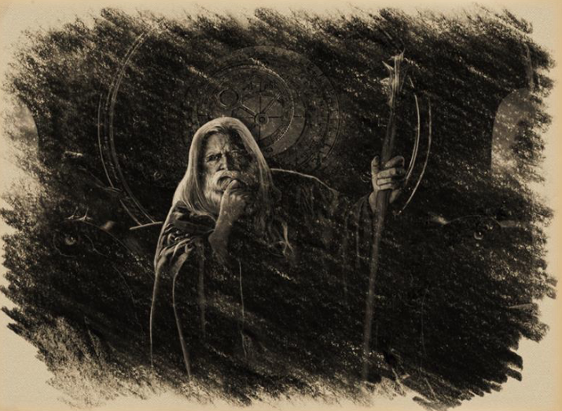
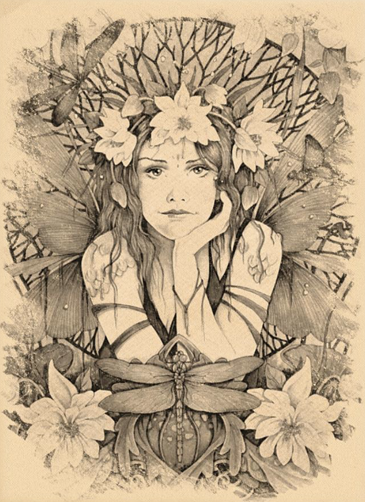

Gegenstände
Das Leben des Khazan

Ausbildung zum Druiden
Lange, lange vor dem Zeitalter der Könige wurde ein strahlender Leuchtturm des Lebens geboren. Soweit in der Geschichte überliefert, hatte Khazan eine ereignislose Jugend. Als junger Mann studierte Khazan, um Druide zu werden. Seine Mentoren entdeckten, dass er brillant und methodisch veranlagt war. Er lernte viel schneller als viele Druiden, die ihre Berufung in der Natur fanden. Er verinnerlichte schnell alles, was seine Meister zu lehren hatten. Die Zeit verging, und bald schon, mit einem Schuss Alter und Weisheit, war Khazan derjenige, der lehrte.
Die Dunkelheit
Während der Zeit der Dunkelheit im Tal half Khazan den Steinmetzen der Fey und Ursari beim Bau des Bernsteintempels, um das Tal vor den dunklen Mächten zu schützen. Von den Fey erfuhr Khazan, dass die dunklen Mächte als böse Überbleibsel bezeichnet wurden. Sie waren lediglich Schatten und Spiegelungen älterer himmlischer Götter, die besiegt wurden. Die bösen Überreste verbringen eine Ewigkeit damit, in die Ebene der Sterblichen einzudringen, um Rache zu üben und die Völker zu vernichten, die die Götter verehren, die sie in längst vergessenen Zeiten vernichtet haben. Die besiegten bösen Überreste fanden einen Weg in die sterbliche Ebene und beschlossen, das Barovia-Tal anzugreifen.
Der Bernsteintempel und seine Ausbildung zum Zauberer
Der Bernstein in den Ghakis-Bergen kann Magie nutzbar machen. Die Fey unterwiesen Khazan in neuer, mächtiger Magie, einschließlich der Methoden, die Überreste im Bernstein gefangen zu halten, und segneten Khazan mit außerordentlich langem Leben. Khazans druidisches Wissen und seine Unterweisung durch die Fey waren von unschätzbarem Wert, und seine Kenntnisse und Fähigkeiten übertrafen die seiner Mitdruiden, und er wurde der erste Zauberer von Barovia.
Zauberer
Khazan lehrte auch andere, Zauberer zu werden, und gemeinsam bewachten die Zauberer den Bernsteintempel und hielten Wache vor jeder kommenden Dunkelheit.
Khazans Turm
Ein Jahrhundert verging, seit die Dunkelheit im Bernsteintempel gefangen gehalten wurde. Khazan beschloss, in das Tal zurückzukehren und einen Turm (Khazans Turm) auf einer kleinen Insel im Baratok-See zu errichten, um dort seine verbleibenden Jahre mit dem Studium der Natur und der Magie zu verbringen - allein. Er überließ es den Zauberern, die er ausgebildet hatte, den Bernsteintempel zu beschützen und ihr Wissen an die Nächsten weiterzugeben.
Ankunft der Ersten Könige
Khazan lebte zurückgezogen in seinem Turm, als die ersten Könige eintrafen, denn er mochte die Welt der Könige, die die Natur zerstörten, nicht und wollte auch nicht dazugehören. Khazans Weisheit wusste, dass ein Gleichgewicht zwischen den neuen Königen und den alten Bräuchen gefunden werden musste. Die Völker Barovias wandten sich den neuen Wegen des Morgenfürsten zu, und Khazans Druidenbrüder wagten sich in den Südwesten nach Yester Hügel, ein zerbrechlicher Frieden war in Sicht.

Ankunft der Terg
Khazan wusste, dass die Zeit der Könige, wie alle Dinge, irgendwann zu Ende gehen würde. Der Frieden sollte nicht von Dauer sein, als die kriegerischen Kräfte der Terg begannen, in Barovia einzufallen. Khazan blieb neutral gegenüber den Nöten der Menschen, allein in seinem Turm, denn die Könige würden ihren Krieg haben, aber die Fey und das Tal würden noch lange nach den Königen und ihren Kriegen fortbestehen.
Der Krieg mit den Terg
Der Krieg mit den Terg zog sich in die Länge und versetzte das Tal in Angst und Schrecken. Die königliche Familie von Barovia (Dorf) wurde von den Terg abgeschlachtet und die verbliebenen Ritter und Adligen mussten eine lange Belagerung überstehen. Ein junger Prinz kam, um Barovia (Dorf) vor den Terg-Invasoren zu retten.
Treffen mit dem Jungen Prinzen
Der junge Prinz erfuhr von dem alten Weisen Khazan und besuchte ihn. Der junge Prinz schien naiv zu sein und wollte etwas über die Geschichte des Tals erfahren, denn wenn der Krieg gewonnen und der Frieden wiederhergestellt werden sollte, war Wissen erforderlich.
Khazan wusste nicht, ob er helfen konnte, aber er erklärte dem jungen Prinzen, dass die dunklen Spuren, die im Bernsteintempel gefangen waren, niemals entweichen durften, sonst würden das Tal und alles darin zerstört werden. Khazan erzählte dem jungen Prinzen vom Gleichgewicht der Natur und den Fey und seinem Wunsch, dass der Frieden in das Tal zurückkehren möge. Der junge Prinz war fasziniert vom Bernsteintempel, seinen dunklen Überresten und seiner Geschichte und versprach, dass er den Terg niemals Zugang zum Bernsteintempel gewähren würde und dass Frieden für alle im Tal herrschen würde, sobald die Terg besiegt wären.
Angriff auf die Tore von Tsolenka
Khazan erfuhr, dass Truppen die Tore von Tsolenka angriffen, die den Bernsteintempel vor Eindringlingen schützten. Khazan eilte zum Bernsteintempel, da er befürchtete, dass die Dunkelheit im Inneren des Bernsteintempels freigesetzt werden würde, wenn die Tore nicht halten würden.
Verderbnis des Jungen Prinzen
Als Khazan den Bernsteintempel erreichte, stellte er fest, dass der Bernsteintempel überfallen worden war, und zu seiner schrecklichen Überraschung war es der junge Prinz, der sich Zutritt verschafft hatte.
Malduk: Was hat er dann getan? Hat er ihn gestellt oder ist er einfach gegangen, nachdem er das erkannt hatte?
Entführung der Wasserfey
Die Bergfey war zum Bernsteintempel gekommen, um Khazan zu suchen, denn ihre Schwester, die Wasserfey, war von dem jungen Prinzen gefangen genommen worden. Sie hatte Khazan mitgeteilt, dass der junge Prinz große Macht erlangt und einen Pakt mit den dunklen Gestalten im Bernsteintempel geschlossen hatte, denn er war nicht mehr der junge Prinz, sondern ein böser dunkler Prinz.

Khazan machte sich auf den Weg, um den dunklen Prinzen zu treffen, einen Handel zu schließen, die Wasserfey zu befreien und neutralen Boden zu suchen. Denn Khazan war ein mächtiger Zauberer, und der dunkle Fürst würde auf die Vernunft hören.
Der Versuch, den dunklen Prinzen mit Vernunft zu verändern
Als er auf Schloss Rabenhorst ankam, hatte sich der junge Prinz in der Tat verändert, und Dunkelheit pulsierte in ihm, seine Augen waren dunkel, und er stank nach Tod, er war ein dunkler Fürst geworden. Khazan sprach mit dem dunklen Prinzen und versuchte, ihn zur Vernunft zu bringen. Der Pakt, den er mit den dunklen Überresten geschlossen hatte, gab ihm die Macht, seine Feinde zu besiegen, aber zu welchem Preis? Denn das Leben des dunklen Prinzen gehörte den dunklen Überresten und er war nun ein bloßer Diener der dunklen Überreste.
Der Dunkle Fürst greift Khazan an
Der dunkle Fürst wurde wütend, denn er behauptete, er sei niemandes Diener. Er sei der Herr, der Graf, das Land Barovia. Der dunkle Fürst, durchdrungen von dunklen Mächten, griff Khazan an. Es war das erste Mal, dass Khazan jemandem gegenüberstand, der von den dunklen Mächten des Bernsteintempels durchdrungen war. Der dunkle Prinz war mächtig, und die dunklen Mächte strömten aus ihm mit einer Bosheit, die das Tal seit Jahrhunderten nicht mehr gesehen hatte.

Khazans List
Doch Khazan hätte nie erwartet, dass der dunkle Prinz der Vernunft nachgeben und die Wasserfey freilassen würde, denn Khazans Besuch war eine List. Khazan wusste, dass er eine Begegnung mit dem dunklen Prinzen mit Hilfe der dunklen Mächte nicht überleben würde, er brauchte nur Zeit und nutzte die Unterredung als Ablenkung. Khazan kanalisierte alle seine magischen Kräfte, während er mit dem dunklen Prinzen verhandelt hatte, um der Wasserfey bei ihrer Flucht zu helfen.
Khazans Opfer
Khazan wusste, dass jede Hoffnung und das Überleben des Tals von den Fey abhing. Sein Opfer war sein Schicksal, seine letzte Tat im Dienste der Fey, der Druiden und des schönen Tals, das er geliebt hatte.
Khazans Geist
Niemand weiß, was mit dem großen Zauberer Khazan geschah. Einige glauben, dass er die Schlacht überlebte und sich zum Bernsteintempel zurück wagte. Andere glauben, dass sein Geist in Barovia in seinem Turm am Baratok-See oder in den Hallen von Schloss Rabenhorst umherwandert.
